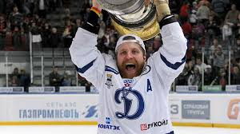

| born |
height |
weight |
| 23 January 1987 |
5 ft 11 in (180 cm) |
Weight 210 lb (95 kg; 15 st 0 lb) |
Playing Career
After playing with different junior teams,
Komarov began his professional
career in the Finnish SM-liiga with Ässät.
After winning a silver medal with Ässät in 2006, he moved to Pelicans. After his season with Ässät,
he was chosen in the sixth round of the 2006 NHL Entry Draft, 180th overall, by the Toronto Maple Leafs.
Komarov captained Finland at the 2007 World Junior Ice Hockey Championships
in Leksand and Mora, Sweden.
During the 2009–10 season, Komarov played with Dynamo Moscow of the Kontinental Hockey League (KHL).
Komarov won a gold medal with Finland at the 2011 IIHF World Championships in Bratislava and Košice, Slovakia.

Medal Record
- Olympic Games
Gold medal – first place 2022 Beijing
Bronze medal – third place 2014 Sochi.
- World Championships
Gold medal – first place 2011 Slovakia
Silver medal – second place 2014 Belarus
Silver medal – second place 2016 Russia
- World Junior Championships
Bronze medal – third place 2006 Canada.
Career
-
Ässät
-
Pelicans
-
Toronto Maple Leafs
- New York Islanders
- SKA Saint Petersburg
- NHL Draft 180th overall, 2006
Visit on Wikipedia